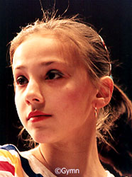

Andreea Raducan (ROM)
1999 World FX Champion
2000 Oympic V Silver Medalist
2001 World AA Bronze Medalist
2001 World B and FX Champion
|
 |
Medal Total
Competition Results
1998
Chunichi Cup: 7th AA, 1st B, 3rd FX, 4th V
Jr. European Championships: 4th AA, 2nd B, 3rd FX
Jr. Intl. Team Championships: 3rd AA
Romanian Championships: 3rd AA
1999
ESP-ROM: 1st Team, 4th AA
Gander Memorial: 3rd AA
GER-ROM-ESP: 1st Team, 3rd AA
Glasgow Grand Prix: 1st B, 3rd FX, 6th V, 6th UB
HOL-ROM: 1st Team, 4th AA
Intl. Team Championships: 1st Team, 4th AA
Romanian Championships: 2nd AA
Samboo Cup: 2nd FX, 3rd V, 4th UB
Trophee Massilia: 2nd AA
World Championships: 1st Team, 5th AA, 1st FX, 2nd B
Zurich Grand Prix: 2nd V, 2nd FX, 3rd UB, 3rd B
2000
European Championships: 3rd Team, 6th AA, 2nd FX,
5th B
GBR-ROM-UKR: 1st Team, 1st AA
Monaco Grand Prix: 1st FX, 5th B
Olympic Games: 1st Team, 2nd V, 7th FX
Romanian Championships: 1st AA
World Cup: 1st B, 1st FX, 3rd UB, 5th V
2001
Chunichi Cup: 4th AA, 1st V, 2nd B
HOL-ROM Dual Meet: 1st Team, 1st AA
International Championships of Romania: 1st AA
Romanian Championships: 3rd AA
Trophee Massilia: 1st AA, 1st V, 1st B, 2nd FX
World Championships: 1st Team, 3rd AA, 1st B, 1st
FX, 3rd V
2002
French International: 1st B, 3rd FX
Glasgow Grand Prix: 1st B, 2nd FX
This page was created on October 31, 2000 and
was last updated on December 18, 2004.
© Gymn Forum